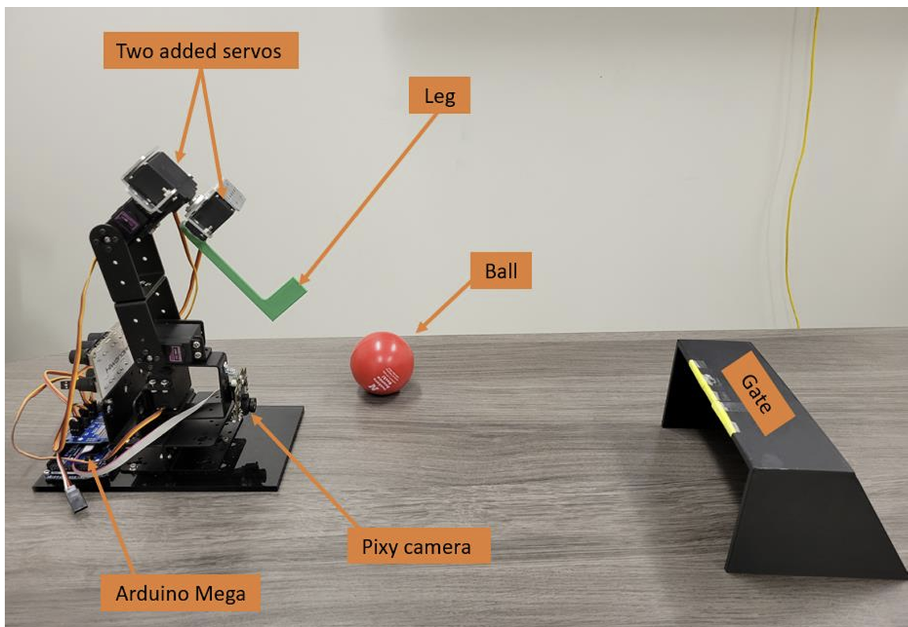
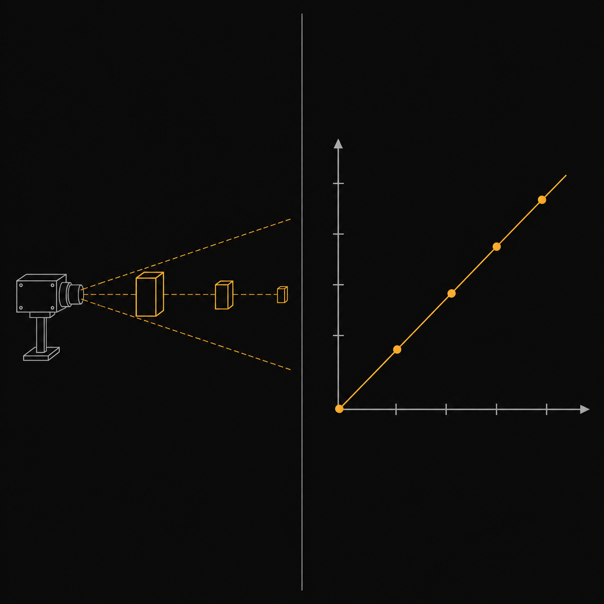
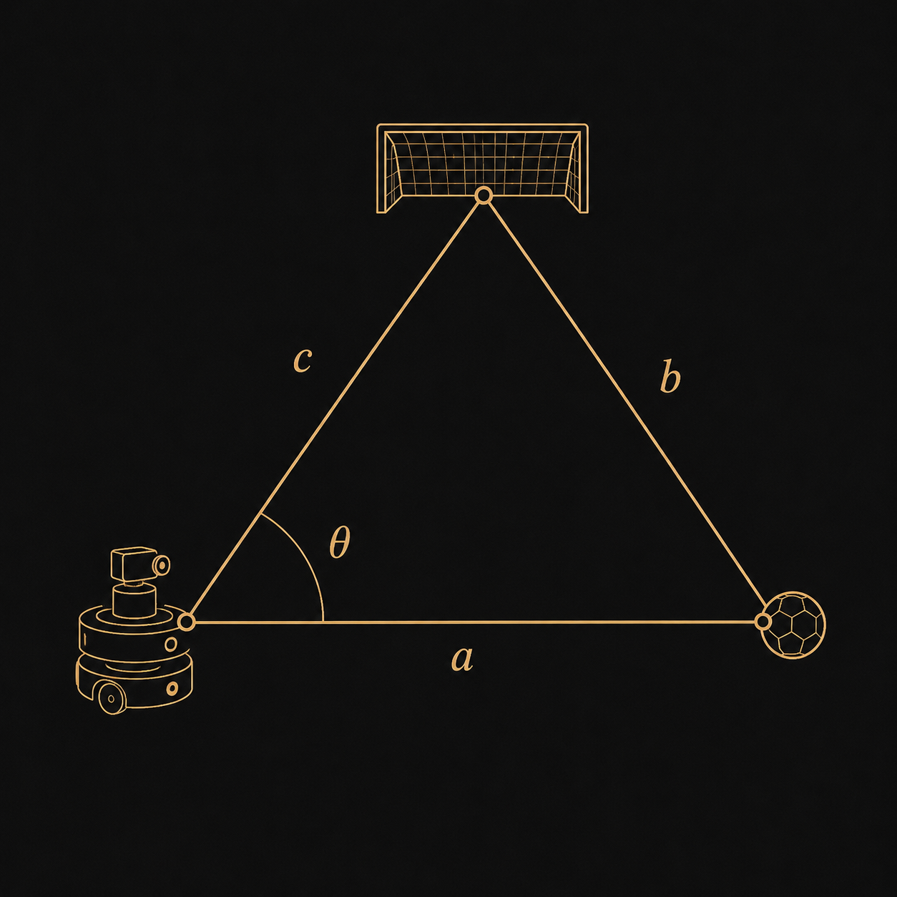

Ball Shooting Manipulator
A five degree of freedom robotic arm that finds a ball and a goal with a Pixy camera, works out both objects' positions from pixel counts and viewing angle, then kicks the ball toward the goal using inverse kinematics and a timed servo sequence.
Mission
Robot arms have done repetitive, dangerous, and high precision work since Devol and Engelberger introduced the first one in 1961 for a hot diecasting machine. Robots increasingly show up in sports too, with AI driven systems now making real time decisions in games like tennis and soccer. That is the direct inspiration for this project, a robotic arm that plays a simplified game of soccer by shooting a ball into a goal.
The task looks simple on paper. A ball sits somewhere inside the arm's reachable workspace, and a goal is placed at a random position and angle relative to the robot. The arm has to work out where the ball is, position its end effector directly behind it, and kick at the correct angle to send the ball toward a goal it can only see, not measure directly. A Pixy camera identifies both the ball and the goal by color, and a linear regression model turns the number of pixels each object returns into an estimated distance, paired with the angle at which the camera saw the object. Those two numbers feed inverse kinematics, which recovers the ball's position in the world frame and the end effector orientation needed to kick it toward the goal. The final step is a servo sequence that walks the end effector behind the ball before committing to the kick.
Hardware components
The base platform is a three degree of freedom robotic arm. Two servos were added at the third joint specifically to orient the end effector for kicking, bringing the arm to five degrees of freedom total. An Arduino Mega runs the whole system, paired with a Pixy camera for detecting the ball and the goal. The end effector itself, referred to throughout the project as the leg, is a custom 3D printed part attached to the final joint. The goal is also 3D printed, and yellow sticky notes were added along its top edge purely so the camera could detect it reliably.

Operating principles
Two problems have to be solved before the arm can kick anything: where the ball and the goal actually are, and how to move the arm to hit that target. The first is a perception problem solved with the Pixy camera, the second is a kinematics problem solved once the camera hands off a position estimate.
Object distance and angle
Detection relies entirely on the Pixy camera's RGB and color based algorithms, tracking the red ball and the yellow markers on the goal. The camera has no depth sensing, so distance has to be inferred another way. At several known distances the team recorded how many pixels each object returned, then fit a linear regression line through those points using the least squares formula, producing a separate distance model for the ball and for the goal.
Position also needs an angle, not just a distance. The camera's angle is tracked dynamically while it sweeps, and the angle at the moment the pixel count peaks is taken as the object's true bearing, since that is when the object is most fully in view. That captured angle gets a fixed 10 degree correction, tuned so the end effector consistently lines up behind the ball rather than beside it.

Inverse kinematics and trajectory
Once the ball's location is known, the arm still has to reach it. Keeping the third link parallel to the ground removes a degree of freedom from the problem, so theta 1 and theta 2 come directly from trigonometry, and theta 3 is simply set equal to theta 2 to hold that constraint.
Orienting the leg for the kick itself is a separate calculation, solved with the law of cosines together with the relative angles of the ball and the goal, which gives the kick angle needed to send the ball toward wherever the goal happens to be sitting.

Servo movement is sequenced deliberately: the end effector always finishes positioning itself behind the ball first, and only then does the arm execute the motion that actually kicks it, so the ball cannot be clipped early by a leg that is still getting into place.
Results and conclusion
The finished system reliably found the ball and the goal, positioned the leg behind the ball, and executed a kick toward the goal, run after run. What error remained was traceable, not random.
Most trajectory deviation traced back to two sources: pixel count is an approximate stand in for real distance, and the camera angle measurement carries its own small imprecision. Neither one broke the system, but both nudged the final kick angle enough to matter over a full length shot.
The real value of the project was forcing computer vision and kinematics to work together on a single, real, physical task instead of staying separate exercises, which is exactly what a semester of Mech 453 and 853 was building toward.